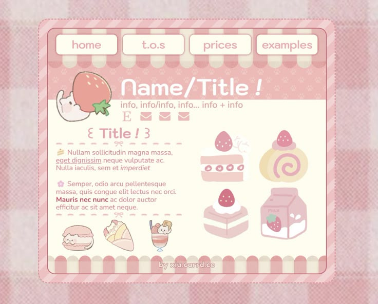
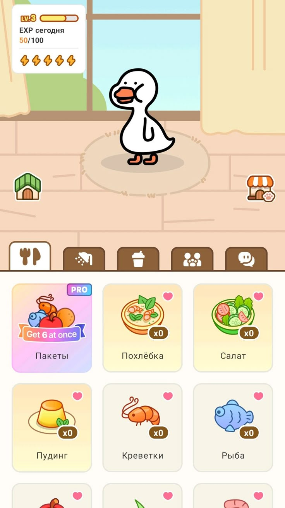
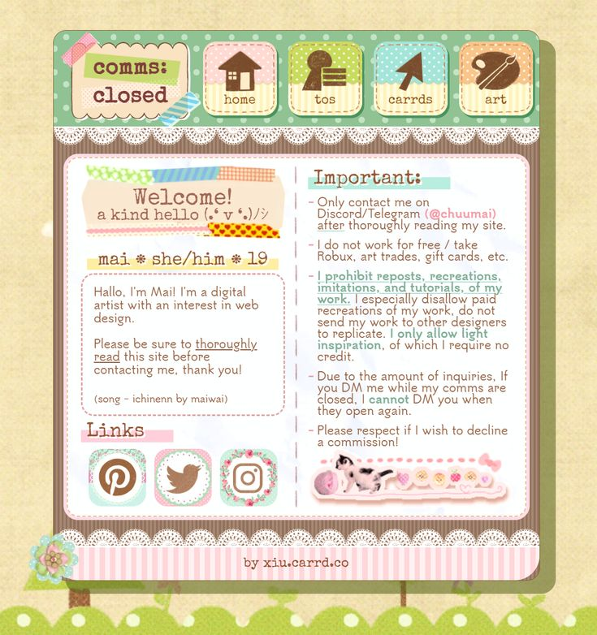
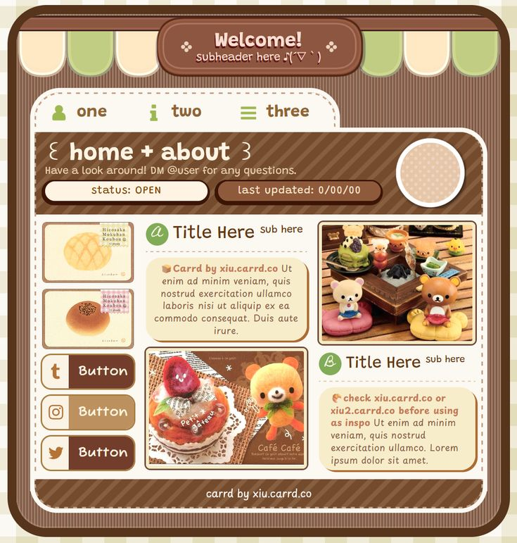
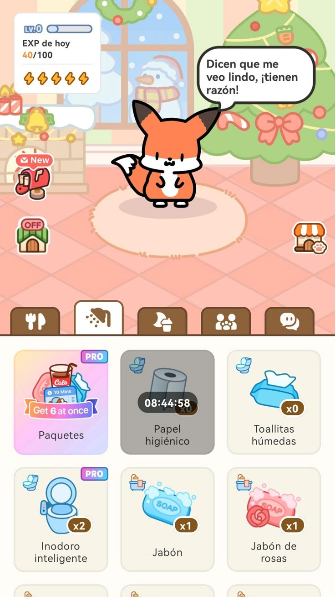
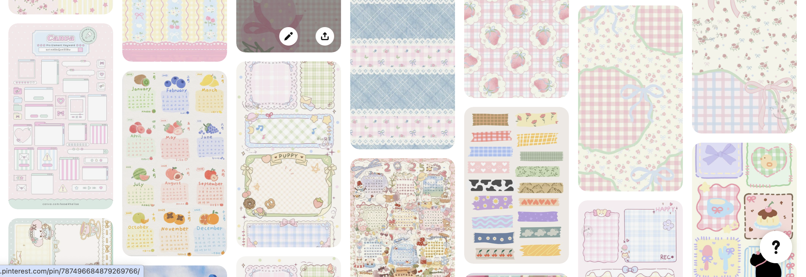
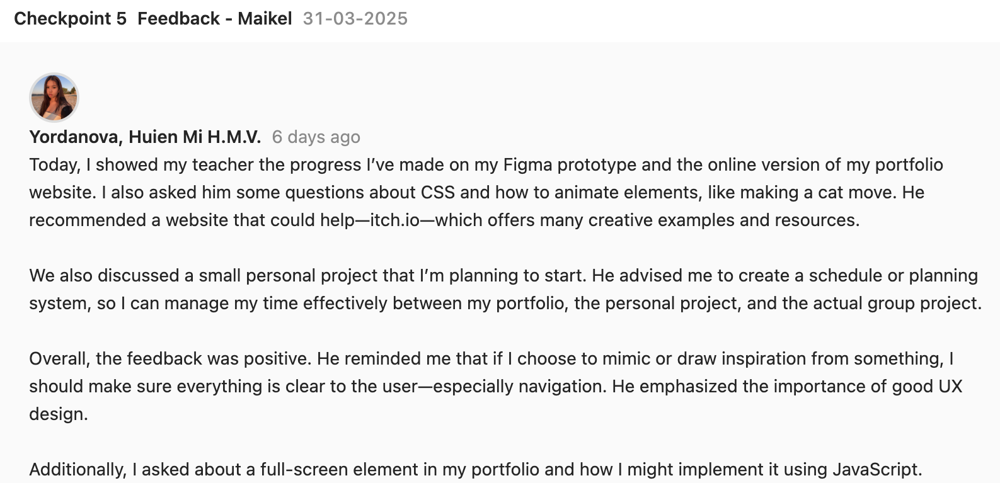

small project
i wanted this semester to start experimenting more on design part and also coding but because its my first time having the adobe creative cloud i wanted to use it as much as possible so I went with different ideas for a small projects, i also make a planning that will help me finish them and not ignore the project and my portfolio.
     i started with gathering ideas and get more material for my small projects which will be " cooking book" "self care" by having a pet that you need to take care of and animated posters for my family's restaurant. I started taking backgrounds like from scrapbook for the cooking book and I got several inspirations from behance for the posters.Click here for figma (no progress still just background)
The feedback i had is to make sure I dont ignore my project and do the small project when i have time
After Effects
Started drawing the logo in Adobe Illustrator each stripe on different layer so that later on I can animate it in after effects, used some effects from the tool to make it look like there is a zest falling also added a background that is going to match more in future, still in process. Showed it to the teachers and present it and got some feedback that will be implemented soon.Also the file was too big to upload in github so I compressed it thats why there is a watermark
Art Department
From my semester one i did went to a doctor and got diagnosed with pcos and my pcos recently got bad so i needed to schedule appoitment for a blood test (this blood test have to be made on the 1st to 3rd day of woman's cycle) before going to bulgaria so when i saw that there is the art department day and I didn't saw that its mandatory I decided to not go and schedule my appoitment that day. It's not a big reason not to go but this is the only reason i didn't went. Otherwise i would have go with Aleksa